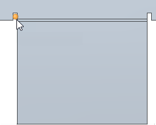
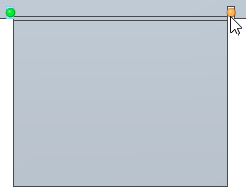
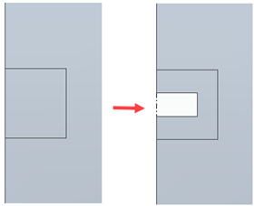
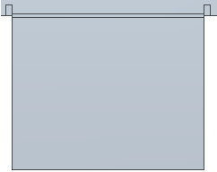
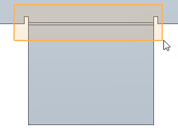
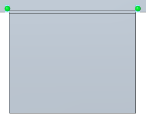
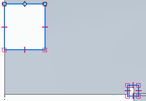
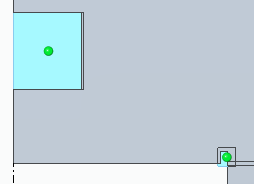
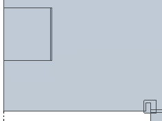

Apply a patch to relief in a flat pattern
When applying patch relief in a flat patten, you can:
Apply a patch to an individual relief
-
Choose Tools tab→Flat group→Relief Patch

-
Click on a bend edge within a relief area.

-
Continue to click bend edges within a relief area.

-
On the Relief Patch command bar, click Accept
 .Note:
.Note:You can click the Draw Profile button to open the Sketch environment and edit the default sketch used to patch the relief.

-
Click Finish.

Apply a patch to a fence selected area
-
Choose Tools tab→Flat group→Relief Patch
. -
To select a fenced relief area, drag a fence around the relief areas.

-
On the Relief Patch command bar, click Accept
.Note:You can click the Draw Profile button to open the Sketch environment and edit the default sketch used to patch the relief.
-
Click Finish.
Apply a patch to all selected reliefs
-
Choose Tools tab→Flat group→Relief Patch
. -
To select all the eligible reliefs, press the A key

-
On the Relief Patch command bar, click Accept
.Note:You can click the Draw Profile button to open the Sketch environment and edit the default sketch used to patch the relief.
-
Click Finish.
Apply a patch to a drawn profile
-
Choose Tools tab→Flat group→Relief Patch
. -
On the Relief Patch command bar, click the Draw Profile button .
-
Use the commands on the Draw tab to create a profile around relief areas.

-
Click the Close Sketch button
 .
.
-
On the Relief Patch command bar, click Accept
, and then click Finish.
How do I
Construct a flat pattern in the sheet metal part documentSave and flatten a sheet metal part
Learn more
Flattening sheet metal partsCreating flat pattern drawings
Look up more details
Flat Pattern commandFlat Pattern command bar
Flat Pattern command bar
Flat Pattern Options dialog box
Relief Patch command
Relief Patch command bar
Save As Flat command
Save as Flat command bar
Save As Flat dialog box
Save As Flat DXF Options dialog box
Layers tab (Save As Flat DXF Options dialog box)
Bend Data tab (Save As Flat DXF Options dialog box)
Font Mapping tab (Save As Flat DXF Options dialog box)